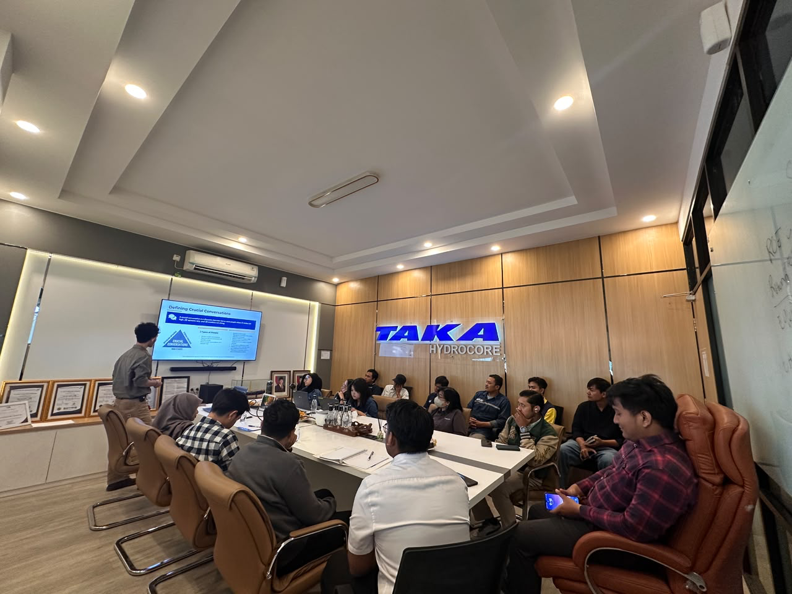

Service Excellence
Proactive response, clear support, and the habit of going beyond client expectations.

Life at THI
At THI, career growth happens close to the work: vessel decks, project preparation, field data, safety routines, and the people who keep every scope moving with discipline.
ScrollField-minded, team-led
THI work connects many disciplines: geotechnical, geophysical, QHSE, equipment, logistics, commercial, finance, HR, and general support. Some people work directly on vessels and project sites. Others make sure planning, documents, data, purchasing, and communication stay organized from the office.

SIGAP culture
SIGAP keeps the culture practical: serve well, keep trust, keep learning, stay aware, and work professionally in every project condition.
Proactive response, clear support, and the habit of going beyond client expectations.
Trustworthy, responsible, committed, and consistent in keeping our word.
Continuous learning, adaptive thinking, innovation, and better output from each assignment.
Respect diversity, protect company reputation, and recognize good contribution.
Work ethic, compliance, teamwork, doing our best, and leading by example.
People behind the work
Team moments



Career reading